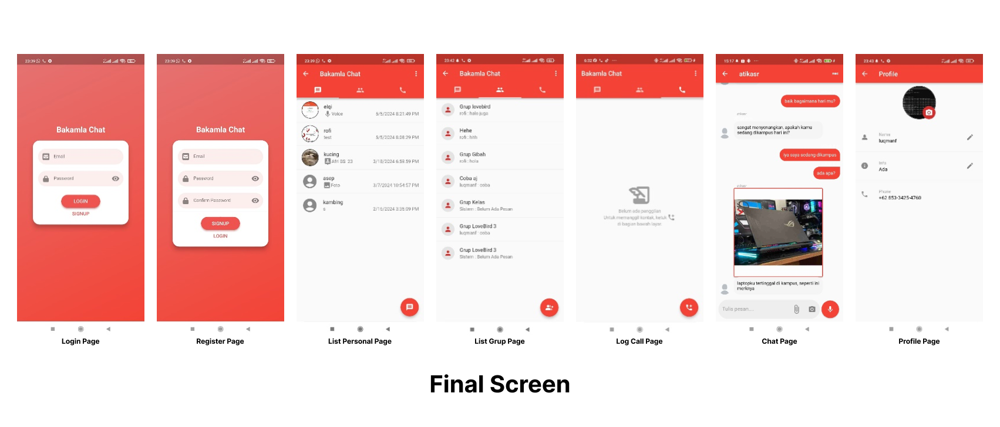

Solo
FullStack Developer
56 Weeks, 2023 - 2024
I spent 1 years 2 month at Bakamla RI Research. During this research stage I studied and learned a lot about messenger applications, such as how chat messages are updated in live time, how to create a system for making voice and video calls between users, and how to secure messages using data encryption.
The Maritime Security Agency of the Republic of Indonesia is a government agency that has an important role in maintaining the security and safety of Indonesian waters. Bakamla uses the Bakamla Messenger application as a communication tool in carrying out operations.
Data leaks are a significant concern when using public communication apps such as WhatsApp and Telegram, as they lack centralized control and may not meet organizational security standards. Furthermore, the Bakamla app's storage server is currently hosted on third-party infrastructure rather than on a dedicated server owned and managed by Bakamla itself, increasing the risk of unauthorized access and reducing control over sensitive data.
Flowchart Login
Flowchart Register
Flowchart Message
Flowchart Call
The Bakamla Messenger application was tested using the End User Computing Satisfaction (EUCS) method to evaluate user satisfaction with the developed system. The results of this testing provide in-depth insights into the user experience, covering aspects such as content, accuracy, format, ease of use, and system timeliness. The complete findings and analysis can be found in My Published Article